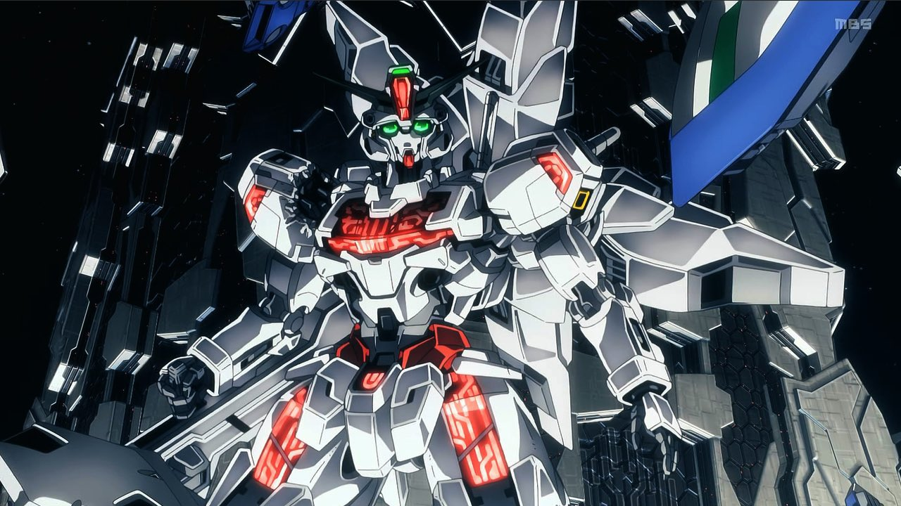

”機動戦士ガンダム 水星の魔女”好きなモビルスーツ
2023年4月9日から毎週日曜日放送中のアニメ機動戦士ガンダム水星の魔女に登場する私の好きなモビルスーツを紹介します。
"1番好き" ダリルバルデ 搭乗者 グエル・ジェターク
ここをクリックで好きな理由に飛びます。
水星の魔女公式サイトのダリルバルデ紹介ページに飛びます。
"2番目に好き" ガンダム・キャリバーン 搭乗者 スレッタ・マーキュリー

水星の魔女公式サイトのガンダム・キャリバーン紹介ページに飛びます。